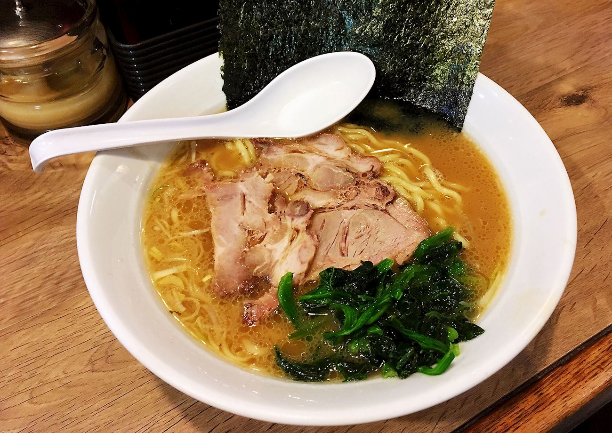

Ramen

Fresh Ramen
When you want to cook to impress, homemade ramen might be best choice
What do you need to prepere such a soup
List of ingredients
- Chicken broth
- Shitake mushrooms
- Dried bonito flakes
- Sake
- Mirin
- Sou sauce
Steps
- Make dashi
- Make tare and chashu
- Make marinated eggs
- Make garlic oil
- Serve
Home